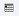
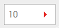

How To List All Users in System
Note: Users List includes all internal users and guest users information, you could find user's current status in system.
- Click on the "Manage Users" button on the left side menu bar.All users in system would be listed on the datatable
- Press the schedule icon  on the row, this would bring you to that user's event schedule lists page.
- Press the edit icon
 on the row, this would bring you to the "Edit User Information" page.
on the row, this would bring you to the "Edit User Information" page. - Click the row number dropdown list  to choose number of rows displayed per page
- Use table navigation button to browse the whole users list.